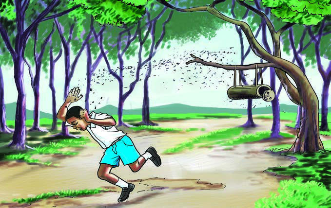

Habari ya piliUmuhimu wa maji
Maji ni muhimu sana kwa kila kiumbe hai Ni sawa
na kusema, maji ni uhai Bila maji hakuna kiumbe hai
kinachoweza kuishi. maji kwa binadamu yana matumizi
mbalimbali. matumizi hayo ni kama vile kunywa kuoga
kupikia na kufulia Maji ya kunywa lazima yawe safi na
salama Ukinywa maji yasiyo salama unaweza kupata
magonjwa. magonjwa hayo ni kipindupindu na homa
ya matumbo Ni muhimu kuchemsha maji ya kunywa na
kuyachuja
Umuhimu wa majiMaji ni muhimu sana kwa kila kiumbe hai Ni sawa
na kusema, maji ni uhai Bila maji hakuna kiumbe hai
kinachoweza kuishi. maji kwa binadamu yana matumizi
mbalimbali. matumizi hayo ni kama vile kunywa kuoga
kupikia na kufulia Maji ya kunywa lazima yawe safi na
salama Ukinywa maji yasiyo salama unaweza kupata
magonjwa. magonjwa hayo ni kipindupindu na homa
ya matumbo Ni muhimu kuchemsha maji ya kunywa na
kuyachuja
Andika upya habari ya Umuhimu wa maji kwa herufi kubwa na alama sahihi za uandishi; tumia eneo la kuandikia, kibodi au Breli.
Habari ya tatu
Habari ya tatuMtoto mtoro
Pwito ni mwanafunzi katika Shule ya Msingi Mapinduzi
Anasoma darasa la pili. siku moja, Pwito alitoroka shuleni
na kwenda porini Alipokuwa porini, aliona mzinga wa
nyuki Alishangaa na kusema, ala Hapa kuna mzinga Pwito
alidhani kuwa mzinga ule una asali. aliingiza mkono ili
achukue asali Ghafla, Pwito alihisi maumivu makali kwenye
mkono wake
Mtoto mtoroPwito ni mwanafunzi katika Shule ya Msingi Mapinduzi
Anasoma darasa la pili. siku moja, Pwito alitoroka shuleni
na kwenda porini Alipokuwa porini, aliona mzinga wa
nyuki Alishangaa na kusema, ala Hapa kuna mzinga Pwito
alidhani kuwa mzinga ule una asali. aliingiza mkono ili
achukue asali Ghafla, Pwito alihisi maumivu makali kwenye
mkono wake

Mtoto anakimbia kutoka msituni huku nyuki wakimfuata.